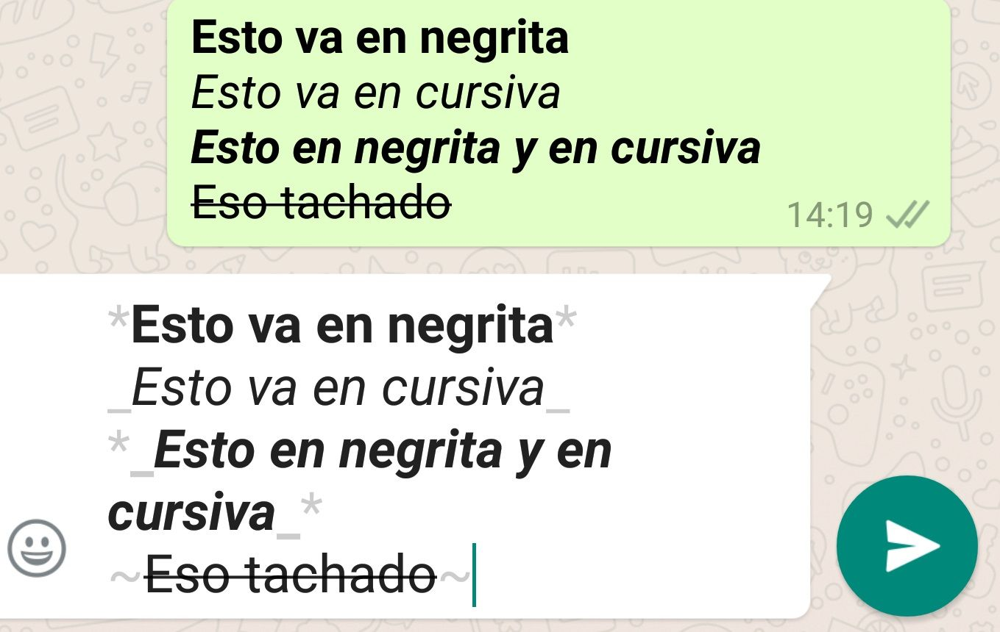
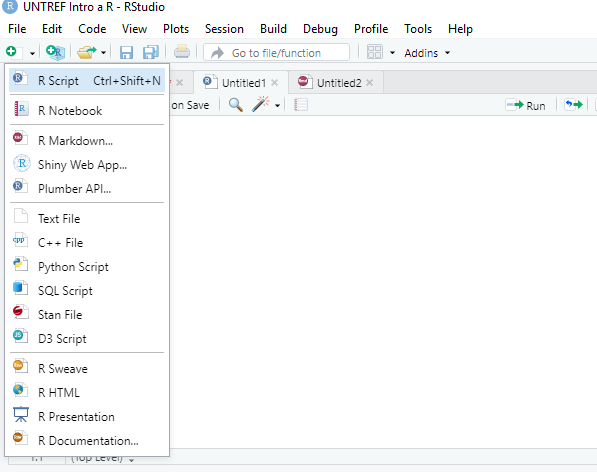
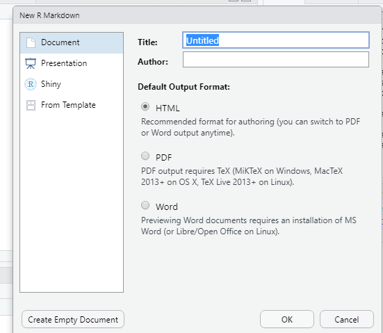
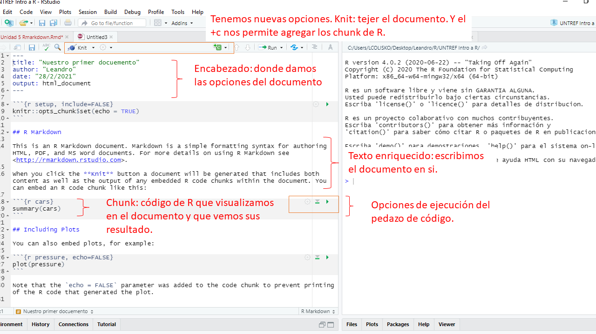
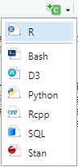

RMARKDOWN
En la última unidad de este curso introductorio a R y R Studio, vamos a ver un tema super útlil a la hora de comunicar nuestros resultados, presentar informes, entregar trabajos. En general, nos desmienten si no corresponde, el flujo de trabajo tradiccional para presentar nuestros resultados es super engorroso, involucra varios programas y tiene un componente manual muy importante, el Ctrl + C y Ctrl + V. Es lo que más aplicamos en este flujo. Esto genera varios problemas, se pierde la trazabilidad del dato y si tenemos que replicar el trabajo es tarea de experto en rompecabezas: hay que unir los pedazos haciendo malabares.
Por el contrario R, en conjunto con Rstudio, facilitan mucho la vida porque en el mismo software: leemos los archivos, los transformamos, creamos visualizaciones y compartimos los resultados.

“En general, nos desmienten si no corresponde, el flujo de trabajo tradiccional para presentar nuestros resultados es super engorroso, involucra varios programas y tiene un componente manual muy importante, el Ctrl + C y Ctrl + V.”
Markdown es un lenguaje de marcación ligero que permite de una manera sencilla dar formato a un texto con una serie de instrucciónes claves. Para pensarlo con un ejemplo de la vida cotidiana, es muy similar a como formateamos un mensaje de Whatsapp.

Rmarkdown es una librería que nos permite utlizar Markdown en conjunto con R y Rstudio. Así podemos escribir texto enriqueciendolo con formatos, con imagenes, videos, gif’s, links y además podemos incrustar código de R y de otros lenguajes de programación, ejecutarlos y visualizar sus resultados.
Aquí podemos consultar el libro Rmarkdon La guía definitiva.
¿Qué podemos hacer con Rmarkdown?
- Entregar trabajos prácticos.
- Crear informes.
- Documentar código.
- Tutoriales, y hasta libros.
Existe una gama muy interesante de salidas. Podemos convertir nuestros textos enriquecidos en archivos:
- HTML
- Word
- Power Point
El tipo de salida HTML es el que vamos a utilizar en este curso y es el más completo.
La librerías que nos permiten trabajar con Markdown en R son rmarkdown y knitr. Tendriamos que instalarlas en caso de no tenerlas y activarlas.
install.packages(c("rmarkdown", "knitr"))
library(rmarkdown)
library(knitr)CONTENIDOS
PRIMER ACERCAMIENTO
1.1. ¿QUÉ ES RMARKDOWN?
Trabajar con Rmarkdown en Rstudio es muy sencillo e intuitivo, para comenzar tenemos que abrir un archivo desde File, New File, R Markdown… o directamente desde el logo de New file como se ve en la siguiente imaginen.

Allí se nos abre una ventana emergente donde podemos seleccionar las opciones del documento que vamos a crear. Le damos un nombre al archivo, escribimos el nombre del o la creadora y seleccionamos el formato de salida del archivo, como comentamos antes tenemos varias opciones, nosotros vamos a seleccionar la salida HTML

Una vez que aceptamos se nos abre un archivo sin titulo en donde veniamos escribiendo los scripts de R, en este caso la extensión del archivo es .Rmd. El mismo, contiene una breve introducción y ejemplos de como podemos agregar código y visualizar los resultados. Demos una mirada a este archivo:

Observamos en la imagen un archivo de un estilo diferente. En primer lugar tenemos nuevas opciones en la barra superior del documento.
knit: Podemos traduicirlo como tejer el documento. Este botón es propio de los archivos Rmarkdown y nos permite correr el archivo para obtener el resultado.
+C: Es bóton que nos permite incorporar al documento pedazos de código. La primera opción es insertar código R, pero vemos otras opciones como SQL, Python y otros.
Por otro lado veamos el contenido del archivo, podemos distinguir tres componentes principales:
Encabezado: donde econtramos la metadata del archivo. Titulo, autor, fecha, y lo principal output. Vamos a ver otras opciones.
Texto: Aquí escribimos el texto del documento, que podemos enriquecer como el mensaje de Whatsapp. Además podemos incorporar código HTML (se puede incluir css y javascript), ya que se procesa como si fuese una página web.
Chunk: O pedazos de código, es esta opción que nos permite visualizar instrucciones de R y además ver su resultado sea este un gráfico, un texto, un número o una tabla.
1.2. USO DE TEXTO
Entre las opciones de texto, la primera que encontramos es la opción de incorporar titulos y subititulos.
Encabezados en Rmarkdown
# TITULO 1
TITULO 1
## TITULO 2
TITULO 2
### TITULO 3
TITULO 3
Si queremos escribir listas sin orden podemos hacerlo comenzando la linea con *, - o +.
* item
* item
* item
* item
* itemResultado:
- item
- item
- item
- item
- item
Para listas ordenadas lo podemos hacer de la siguiente manera.
1. item 1
2. item 2
3. item 3
a. item 3 a
b. item 3 bResultado:
- item 1
- item 2
- item 3
- item 3 a
- item 3 b
Para enriquecer el texto tenemos las siguientes opciones.
| Rmarkdown | |
|---|---|
| Entrada | Salida |
*cursiva* |
cursiva |
_cursiva_ |
cursiva |
**negrita** |
negrita |
__negrita__ |
negrita |
Podemo agregar citas:
> "Todo lo sólido se desvanece en el aire."
>
> --- Karl Marx“Todo lo sólido se desvanece en el aire.”
— Karl Marx
Tambien podemos hacer tablas sencillas con la sintáxis propia de Rmarkdown.
Hacemos nuestra tabla
**Columna 1** | **Columna 2** |
---------------| ---------------|
*Fila 1* | Fila 1
*Fila 2* | Fila 2Salida
| Columna 1 | Columna 2 |
|---|---|
| Fila 1 | Fila 1 |
| Fila 2 | Fila 2 |
Agregamos links e imagenes
Agregamos una imagen ubicada en la Web


Ahora un link
Agregamos una imagen ubicada en la Web
(Este es el texto que ve el usuario como en formato link)[https://www.r-studio.com]
(Este es el texto que ve el usuario como en formato link)[https://www.r-studio.com]
1.3. BLOQUES DE CÓDIGO: CHUNK
Además de poder diseñar documentos HTML de forma muy sencilla tenemos la opción de incorporar el código que realizamos para analizar nuestros datos. Esta potencialidad de Rmarkdown nos ayuda a integrar el 100% de nuestro flujo de trabajo dentro de R. Identificando las desiciones que tomamos para analizar nuestros datos y visualizar el contenido del mismo.
Incorporamos los trozos de código mediante el botón insert:

O podemos utlizar el atajo del teclado Ctrl + Alt + i
Una vez que tenemos nuestro trozo de código, podemos aplicar una serie de condiciones para decirle a Rmarkdown que queremos hacer con la impresión de nuestro output. Por ejemplo, algunas veces queremos mostrar determinada instrucción pero no queremos que se ejecute cada vez que tejemos nuestro documento. Aquí tenemos documentada (la lista completa de opciones)[https://yihui.org/knitr/options/]. Repasemos en este documento alguna de ellas:
eval:TRUE/FALSEdecidimos si el código se ejecuta o no.echo:TRUE/FALSEdecidimos si el código se muestra en el documento o si se oculta.results: decidimos que hacer con el resultado de nuestro código. Las opciones son:- ‘hide’, no se muestra el resultado.
- ‘asis’, texto sin formato
- ‘markup’, texto con formato
collapse:TRUE/FALSEcuando es TRUE se imprime todo junto, código y resultado. Cuando es FALSE, se imprime el código en un bloque y el resultado en otro.warning,message, yerror: las opciones sonTRUE/FALSEdecidimos si en caso de que nuestro código resulte algun mensaje de advertencia, error o simplemente un mensaje, los imprima o no.fig.width,fig.height: decidimos el ancho y el alto de los gráficos en caso de que sean un resultado. La medida es en pulgadas. Podemos definir ambas opciones con un sólo parámetrofig.dim, pasando un vector de valoresfig.dim = c(6, 4).out.width,out.height: decidimos el tamaño que tendrá nuestro gráfico en la salida. Podemos usar porcentajes siendo 100% el total del espacio disponible en el documento.fig.align: decidimos la alineación de la figura. Puede ser ‘left’, ‘center’, o ‘right’.fig.cap: Leyenda de la imágen.
Si queremos establecer parámetros para todo el documento lo podemos hacer en el primer chunk que por defecto tenemos luego del encabezado.
knitr::opts_chunk$set(echo = TRUE, collapse = TRUE) #ETCAdicionalmente podemos comentar que podemos nombrar los trozos de código. Los nombres no pueden repetirse. Esto sirve mucho para ordenar nuestro código.
Finalmente comentemos que podemos llamar el resultado de nuestro código de R a lo largo del documento. Veamos un ejemplo:
suma <- 8 + 10Y podemos llamar al resultado de esta manera.
18Esto es el resultado de la suma: 18.